Hex Map 4.0.0
UI Toolkit
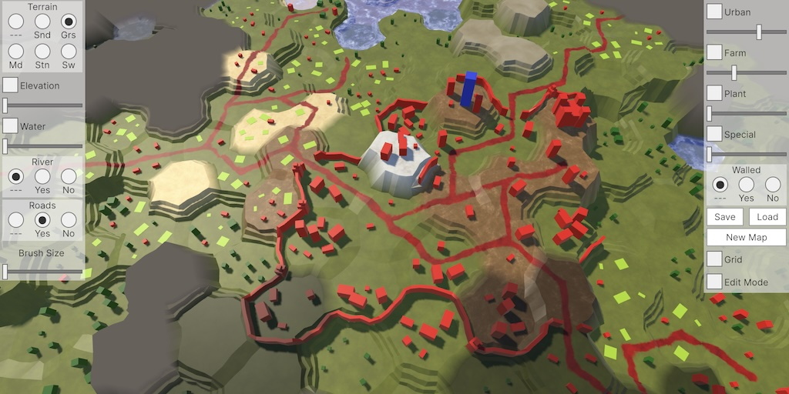
This tutorial is made with Unity 6000.0.43f1 and follows Hex Map 3.4.0.
Unity 6
It is time to migrate our Hex Map project to Unity 6. So open the project in Unity 6, let it upgrade, and we're done. We don't need to change anything, everything still works. The biggest upgrade is to URP, but that takes care of itself. The one thing that we will do is go to the Graphics project settings and disable the Render Graph / Compatibility Mode (Render Graph Disabled) option so URP uses its new Render Graph rendering path.
Creating the Map Editor UI
Now that we're working with Unity 6 we can make use of UI Toolkit to create our in-game UI, replacing the old uGUI system. In this tutorial we will replace the map editor UI panels only, leaving the load/save and new map popup windows for later.
UI Document
UI Toolkit uses UI documents to create GUIs. Create such a document asset via Assets / Create / UI Toolkit / UI Document and name it Side Panels. To put this document in the scene create a game object with a UIDocument component via GameObject / UI Toolkit / UI Document, also naming it Side Panels. Make it a child of the UI container game object.
The component will have its Panel Settings property set to a default PanelSettings assets that has been created in a UI Toolkit asset folder. Move our document asset into this folder as well to keep the UI assets together. Then use it as the Source Asset of the component.
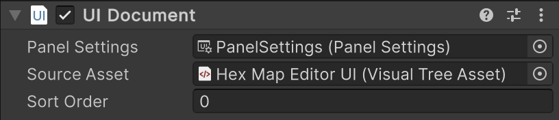
We keep the default configuration of the PanelSettings asset, except that we'll set Scale Mode to Scale With Screen Size so our UI scales itself based on the game window size or fullscreen resolution. We leave the reference resolution at its default of 1200×800, but you could change that as you like.
UXML
We could use the UI Builder window to design our UI, or directly edit the asset via our code editor IDE. We will do the latter, as our UI is fairly straightforward but awkward and finicky to edit via the builder. You can refer to Maze 4.0.0 for an introduction to using the UI Builder.
UI document assets are UXML files, which contain Unity-specific XML code that describes the document. You're assumed to know the basics of XML documents, or at least that it's a tag-based hierarchy. Open the asset file in your code editor IDE to see its default contents.
<?xml version="1.0" encoding="utf-8"?>
<engine:UXML
xmlns:xsi="http://www.w3.org/2001/XMLSchema-instance"
xmlns:engine="UnityEngine.UIElements"
xmlns:editor="UnityEditor.UIElements"
xsi:noNamespaceSchemaLocation="../UIElementsSchema/UIElements.xsd">
</engine:UXML>
The document starts with the default XML meta tag that indicates that the file contains XML version 1.0 data and uses UTF-8 encoding. After that comes the root tag, which defines default tag namespaces and schemas for XML validation. The root tag is from the engine namespace. Not all these are needed, but we keep this as they are so if you decide to use UI Builder later everything will be as it expects it to be.
Because I created the document in the Asset root folder the no-namespace schema location is relative to that. As it's moved one layer deeper into the UI Toolkit folder the relative path should be changed to match, although this isn't terribly important as it's just for IDE tag validation.
xsi:noNamespaceSchemaLocation="../../UIElementsSchema/UIElements.xsd"
The UXML tag is the root of the document, covering the entire window. We will add a child VisualElement tag inside it, which acts as a generic panel. All UI element tags that we use are from the engine namespace.
<?xml version="1.0" encoding="utf-8"?> <engine:UXML …> <engine:VisualElement> </engine:VisualElement> </engine:UXML>
This will be the left panel. To make that clear let's give it a name attribute, naming it LeftPanel. We won't use this name for anything else, it's just for clarity. We'll capitalize names to distinguish them from standard names that Unity's elements contain, which are written in camelCase.
<engine:VisualElement name="LeftPanel"> </engine:VisualElement>
Let's begin by adding the simplest UI element, which is a Label. We pick the label for the brush size, so set its text attribute to Brush Size.
<engine:VisualElement name="LeftPanel"> <engine:Label text="Brush Size" /> </engine:VisualElement>
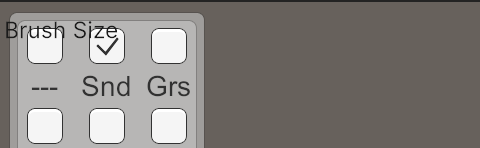
We now get our label superimposed on top of the old uGUI panel, which can be viewed in the game window. Because our new panel scales with screen size you might not get the exact same relative size and position. Also note that UI documents don't always refresh correctly while editing or when changing the game window. Toggling play mode should fix this.
Styling
Styling works similar to how style attributes and cascading style sheets work for web pages. You're assumed to know the basics of CSS documents, or at least that it's a collection of style blocks. Create a style sheet asset via Assets / Create / UI Toolkit / Style Sheet, name it Side Panels Styles and also put it in the UI Toolkit folder. Open it, remove its default contents, and define a sidePanel class with its background-color set to white and with 0.39 opacity. Style classes are defined by writing a dot in front of their name.
.sidePanel {
background-color: rgba(255, 255, 255, 0.39);
}
Assign this class to our left panel in the UI document.
<engine:VisualElement name="LeftPanel" class="sidePanel">
This doesn't change anything yet, we also have to instruct the document to use our style sheet. Do this by adding at Style tag with the correct source attribute as the first child of the root. Note that this tag belongs to the default namespace.
<engine:UXML …> <Style src="Side Panels Styles.uss" /> <engine:VisualElement name="LeftPanel" class="sidePanel">…</engine:VisualElement> </engine:UXML>
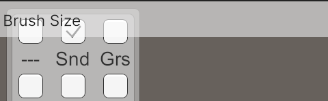
Now our panel has a semitransparent white background and we can see that it fills the entire width of the window and its height is enough to contain the label. This is the result of the default flex layout settings.
Reduce the side panel width by adding the width attribute to its class, set to 130 pixels.
.sidePanel {
background-color: rgba(255, 255, 255, 0.39);
width: 130px;
}
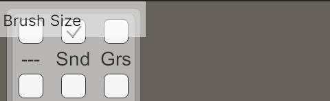
We'll end up with two panels in the end, one on the left and one on the right side of the window. This doesn't work with the default positioning done by the flex layout. We'll switch to using absolute positioning for them instead, by adding the position attribute to the sidePanel class, set to absolute.
.sidePanel {
background-color: rgba(255, 255, 255, 0.39);
position: absolute;
width: 130px;
}
The specific position depends on the panel, so we won't put that in the class. Instead, we add a style attribute to our left panel's tag that sets its left position. Setting it to zero keeps it where it is, but let's set it to 140 pixels so we can see the old and new panels side by side.
<engine:VisualElement name="LeftPanel" class="sidePanel" style="left: 140px;">
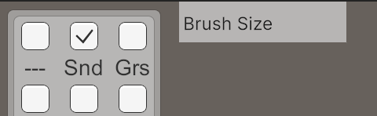
Sliders and Toggles
Let's add our first interactive widget: a slider for the brush size. This is a SliderInt with its value set to zero, its high-value set to 4, and we'll name it BrushSize.
<engine:Label text="Brush Size" /> <engine:SliderInt value="0" high-value="4" name="BrushSize" />
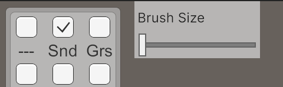
Also add the sliders for elevation and water level. These have a high-value of 6.
<engine:SliderInt value="0" high-value="6" name="Elevation" /> <engine:SliderInt value="0" high-value="6" name="WaterLevel" /> <engine:Label text="Brush Size" /> <engine:SliderInt value="0" high-value="4" name="BrushSize" />
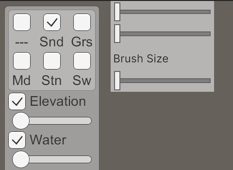
Elevation and water level are optional. The old panel puts checkboxes in front of their labels to control their activation. Let's keep this design and use Toggle elements for them instead of labels, with their value set to true.
<engine:Toggle label="Elevation" value="true" name="ApplyElevation" /> <engine:SliderInt value="0" high-value="6" name="Elevation" /> <engine:Toggle label="Water" value="true" name="ApplyWaterLevel" /> <engine:SliderInt value="0" high-value="6" name="WaterLevel" />
We don't see any checkboxes yet. This is because they're put on the right of their labels by default and the labels have a default minimum width that's larger that our panel's width. So the checkboxes end up outside the panel and get clipped.
We don't need a minimum label width, it'll only get in the way, so let's disable it by adding a style for all Label elements to our style sheet with its min-width set to auto. The order of our styles doesn't matter, because we won't introduce any interdependencies among them.
.sidePanel { … }
Label {
min-width: auto;
}
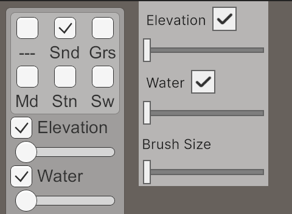
The checkboxes are now placed directly after the labels and have become visible. To put them on the left of their labels we have to reverse the flex flow direction used for the child elements of the toggle. This can be done by adding a style for Toggle with align-self set to flex-start and flex-direction set to row-reverse.
Toggle {
align-self: flex-start;
flex-direction: row-reverse;
}
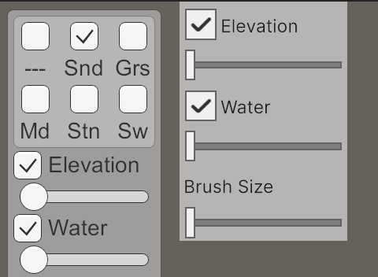
Toggle Groups
The next step is to reproduce the toggle buttons for the terrain type. We need a RadioButtonGroup for this. Its child buttons are defined via its choices attribute, set to a comma-separated list of labels. It's set to the sand option by default, so its value should be 1.
<engine:RadioButtonGroup choices="---,Snd,Grs,Md,Stn,Sw" value="1" name="Terrain" /> <engine:Toggle label="Elevation" value="true" name="ApplyElevation" />
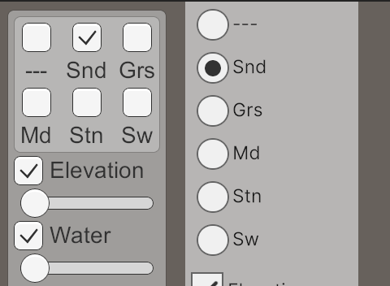
We want these buttons to be displayed in two rows instead of in a column. We have to adjust the style of the button container of the radio group for this, which is one of the implicit child elements of RadioButtonGroup. This container has the unity-radio-button-group__container class assigned to it, so we'll define a style for it with its flex-direction set to row and its flex-wrap set to wrap. Also, for prettier layout we set its justify-content to space-evenly.
.unity-radio-button-group__container {
flex-direction: row;
flex-wrap: wrap;
justify-content: space-evenly;
}
This just centers the contents of the group, because each option still takes up the full available width. We have to also style the individual options, which all have the unity-radio-button__input class. Set its flex-direction to column so the labels will be placed below the buttons and set its width to 30 pixels so three buttons fit on a row.
.unity-radio-button__input {
flex-direction: column;
width: 30px;
}
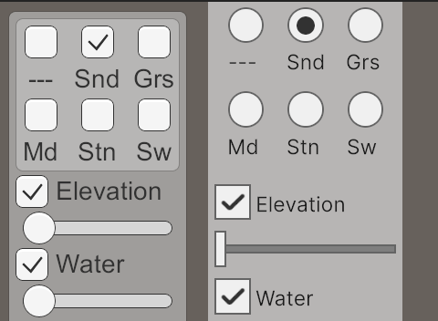
This is almost correct, but unfortunately the labels are slightly misaligned. This is caused by the default margin and padding settings. We can tidy this up by setting both to zero, for the unity-radio-button__text class.
.unity-radio-button__text {
margin: 0;
padding: 0;
}
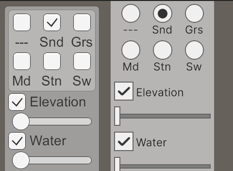
Let's deviate slightly from our original design here by adding a label for our terrain options.
<engine:RadioButtonGroup label="Terrain" choices="---,Snd,Grs,Md,Stn,Sw" value="1" name="Terrain" />
This messes up the layout again because the label will be set to the left of the button group. We fix this by setting the flex-direction to column for the unity-radio-button-group class. Let's also give it a semitransparent white background, on top of the panel's background.
.unity-radio-button-group {
background-color: rgba(255, 255, 255, 0.39);
flex-direction: column;
}
We also have to clear the margin and padding of the label and center it. The group's label doesn't have its own class, so we have to specify that we want to style the direct Label children of all elements with the unity-radio-button-group class.
.unity-radio-button-group > Label {
align-self: center;
margin: 0;
padding: 0;
}
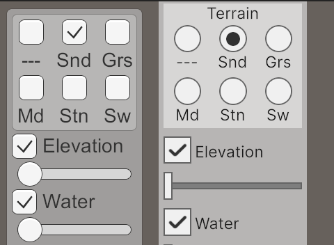
Now we can also used our styled RadioButtonGroup for the river and roads widgets.
<engine:SliderInt value="0" high-value="6" name="WaterLevel" />
<engine:RadioButtonGroup
label="River" choices="---,Yes,No" value="0" name="River" />
<engine:RadioButtonGroup
label="Roads" choices="---,Yes,No" value="0" name="Roads" />
<engine:Label text="Brush Size" />
And let's center the brush size label as well, using its style attribute.
<engine:Label text="Brush Size" style="align-self: center;" />
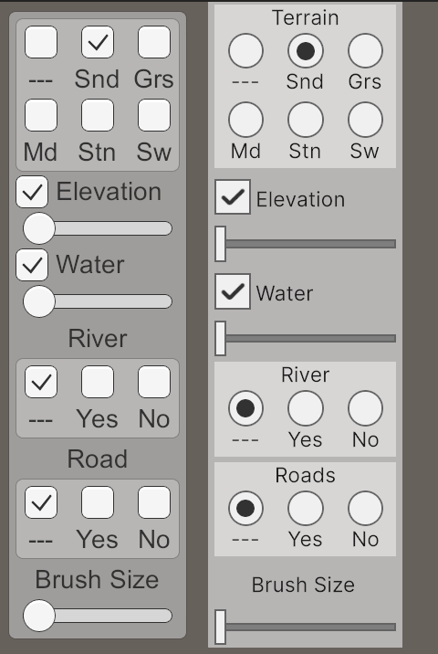
Right Panel
Use what we have now to create the right panel with all its content except its buttons. As this panel sits on the right side of the window we set its positioning style to right instead of left, again with 140 pixels.
<engine:VisualElement
name="LeftPanel" class="sidePanel" style="left: 140px;">
…
</engine:VisualElement>
<engine:VisualElement
name="RightPanel" class="sidePanel" style="right: 140px;">
<engine:Toggle label="Urban" name="ApplyUrbanLevel" />
<engine:SliderInt value="0" high-value="3" name="UrbanLevel" />
<engine:Toggle label="Farm" name="ApplyFarmLevel" />
<engine:SliderInt value="0" high-value="3" name="FarmLevel" />
<engine:Toggle label="Plant" name="ApplyPlantLevel" />
<engine:SliderInt value="0" high-value="3" name="PlantLevel" />
<engine:Toggle label="Special" name="ApplySpecialIndex" />
<engine:SliderInt value="0" high-value="3" name="SpecialIndex" />
<engine:RadioButtonGroup
label="Walled" choices="---,Yes,No" value="0" name="Walled" />
<engine:Toggle label="Grid" name="Grid" />
<engine:Toggle label="Edit Mode" value="true" name="EditMode" />
</engine:VisualElement>
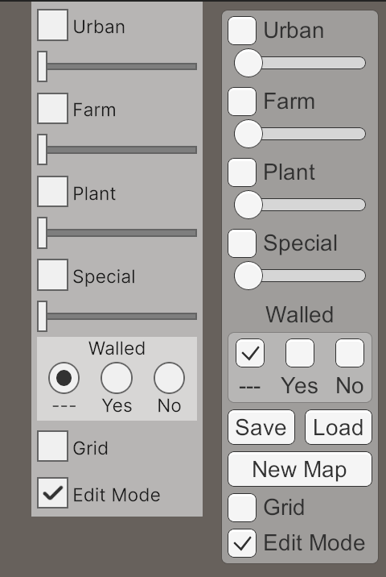
We can use the Button tag to create our buttons. To put the save and load buttons on the same row we wrap them in a VisualElement with its flex-direction set to row.
<engine:RadioButtonGroup label="Walled" choices="---,Yes,No" value="0" name="Walled" /> <engine:VisualElement style="flex-direction: row;"> <engine:Button text="Save" name="SaveButton" /> <engine:Button text="Load" name="LoadButton" /> </engine:VisualElement> <engine:Button text="New Map" name="NewMapButton" /> <engine:Toggle label="Grid" name="Grid" />
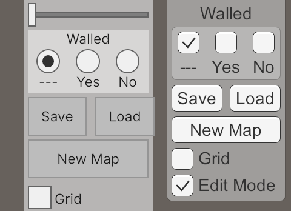
We have to add a Button style to make them look good. Set its flex-grow and flex-shrink both to 1, so the buttons are free to resize to fit the available space. Make their background white and set their padding to 4 pixels to shrink them down vertically.
Button {
flex-grow: 1;
flex-shrink: 1;
background-color: rgb(255, 255, 255);
padding: 4px;
}}
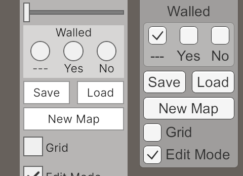
Listening to the UI
Our side panels have been designed. What's left is to hook them up to our code so making changes has any effect. UI Toolkit facilitates the creation of bindings between widgets and object properties, but this is convoluted and introduces a lot of overhead because this connection goes both ways, meaning that the UI has to continuously check whether changes have been made to the object properties. We only need to listed to the UI, not the other way around, so we'll make use of one-directional callbacks instead.
Registering Callbacks
Add a serializable UIDocument field for the side panels to HexMapEditor and hook it up via the inspector.
[SerializeField] UIDocument sidePanels;
When it awakens, retrieve the rootVisualElement of the side panels document and keep track of it via a variable.
using UnityEngine;
using UnityEngine.EventSystems;
using UnityEngine.UIElements;
…
void Awake()
{
terrainMaterial.DisableKeyword("_SHOW_GRID");
Shader.EnableKeyword("_HEX_MAP_EDIT_MODE");
SetEditMode(true);
VisualElement root = sidePanels.rootVisualElement;
}
Now we can query the root node via the generic Q method, asking for a specific type of node with a given name. We begin with the Terrain element.
VisualElement root = sidePanels.rootVisualElement;
root.Q<RadioButtonGroup>("Terrain");
We register a callback for when its value changed by invoking RegisterValueChangedCallback on it, passing it a lambda function with a change parameter, which has a newValue property that contains the new value. Assign it to activeTerrainTypeIndex, subtracting 1 because the first option represents no terrain change and we represent that with −1.
root.Q<RadioButtonGroup>("Terrain").RegisterValueChangedCallback(
change => activeTerrainTypeIndex = change.newValue - 1);
Do the same for the elevation and water level toggles and sliders. Although the types of change events are different, the code works the same.
root.Q<RadioButtonGroup>("Terrain").RegisterValueChangedCallback(
change => activeTerrainTypeIndex = change.newValue - 1);
root.Q<Toggle>("ApplyElevation").RegisterValueChangedCallback(
change => applyElevation = change.newValue);
root.Q<SliderInt>("Elevation").RegisterValueChangedCallback(
change => activeElevation = change.newValue);
root.Q<Toggle>("ApplyWaterLevel").RegisterValueChangedCallback(
change => applyWaterLevel = change.newValue);
root.Q<SliderInt>("WaterLevel").RegisterValueChangedCallback(
change => activeWaterLevel = change.newValue);
Register callbacks for all other terrain-editing values as well.
root.Q<SliderInt>("WaterLevel").RegisterValueChangedCallback(
change => activeWaterLevel = change.newValue);
root.Q<RadioButtonGroup>("River").RegisterValueChangedCallback(
change => riverMode = (OptionalToggle)change.newValue);
root.Q<RadioButtonGroup>("Roads").RegisterValueChangedCallback(
change => roadMode = (OptionalToggle)change.newValue);
root.Q<SliderInt>("BrushSize").RegisterValueChangedCallback(
change => brushSize = change.newValue);
root.Q<Toggle>("ApplyUrbanLevel").RegisterValueChangedCallback(
change => applyUrbanLevel = change.newValue);
root.Q<SliderInt>("UrbanLevel").RegisterValueChangedCallback(
change => activeUrbanLevel = change.newValue);
root.Q<Toggle>("ApplyFarmLevel").RegisterValueChangedCallback(
change => applyFarmLevel = change.newValue);
root.Q<SliderInt>("FarmLevel").RegisterValueChangedCallback(
change => activeFarmLevel = change.newValue);
root.Q<Toggle>("ApplyPlantLevel").RegisterValueChangedCallback(
change => applyPlantLevel = change.newValue);
root.Q<SliderInt>("PlantLevel").RegisterValueChangedCallback(
change => activePlantLevel = change.newValue);
root.Q<Toggle>("ApplySpecialIndex").RegisterValueChangedCallback(
change => applySpecialIndex = change.newValue);
root.Q<SliderInt>("SpecialIndex").RegisterValueChangedCallback(
change => activeSpecialIndex = change.newValue);
root.Q<RadioButtonGroup>("Walled").RegisterValueChangedCallback(
change => walledMode = (OptionalToggle)change.newValue);
Buttons
Our old panel was directly connected to the new and save/load menus, but now we do everything via HexMapEditor. So it needs fields to reference the menus, which have to be hooked up via the inspector.
[SerializeField] NewMapMenu newMapMenu; [SerializeField] SaveLoadMenu saveLoadMenu;
Then we can directly add the Open method of the new map menu to the its button's clicked event. The save and load options require an indirect step via a lambda function to provide the correct argument to their Open method.
void Awake()
{
…
root.Q<Button>("SaveButton").clicked += () => saveLoadMenu.Open(true);
root.Q<Button>("LoadButton").clicked += () => saveLoadMenu.Open(false);
root.Q<Button>("NewMapButton").clicked += newMapMenu.Open;
}
Grid and Edit Mode
The last two remaining widgets are for toggling the grid visualization and edit mode. Use the code from ShowGrid to create the lambda function for the grid toggle.
root.Q<Button>("NewMapButton").clicked += newMapMenu.Open;
root.Q<Toggle>("Grid").RegisterValueChangedCallback(change => {
if (change.newValue)
{
terrainMaterial.EnableKeyword("_SHOW_GRID");
}
else
{
terrainMaterial.DisableKeyword("_SHOW_GRID");
}
});
The edit mode toggle controls whether the object itself is enabled, but it's also hooked up to the SetEditMode method of the HexGameUI object in our old panel. We'll now pass that invocation though HexMapEditor as well.
[SerializeField]
HexGameUI gameUI;
…
void Awake()
{
…
root.Q<Toggle>("EditMode").RegisterValueChangedCallback(change => {
enabled = change.newValue;
gameUI.SetEditMode(change.newValue);
});
}
Cleanup
At this point our new panels are fully functional, working exactly the same as the old panels. So we can remove the old methods that set all the values.
// public void SetTerrainTypeIndex(int index) =>// activeTerrainTypeIndex = index;// …// public void ShowGrid(bool visible) { … }
We can also remove the old invocation of SetEditMode in Awake, as it didn't do anything anyway.
void Awake()
{
terrainMaterial.DisableKeyword("_SHOW_GRID");
Shader.EnableKeyword("_HEX_MAP_EDIT_MODE");
// SetEditMode(true);
…
}
Finally, remove the panel children from the UI / Hex Map Editor game object. Also remove the canvas, canvas scaler, and graphic raycaster components from it. Then remove its RectTransform component, which reverts it to a regular Transform component, and finally reset it to the identity transformation.
We have now replaced our old uGUI panels with new UI Toolkit panels. The popup panels still use uGUI though. We will replace them in the future.
The next tutorial is Hex Map 4.1.0.